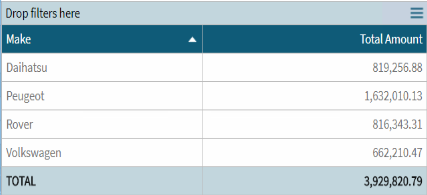
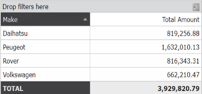

This section details changes made to the QueryViewer control. Upgrading to GeneXus 17The Refresh QueryViewer method is not supported; the query will be updated automatically when anyfilter change its value. Upgrading to GeneXus 15 upgrade 12Several changes were done to the Theme object associated to the QueryViewer control to be coordinated with the Dashboard object. The new "look and feel" (default) uses blue as the central color.  Up to GeneXus 15 Upgrade 11 the default color was gray:  To keep the previous value since GeneXus 15 upgrade 12 check SAC #43674. See Also |
| Backlinks |
| Category:QueryViewer control |